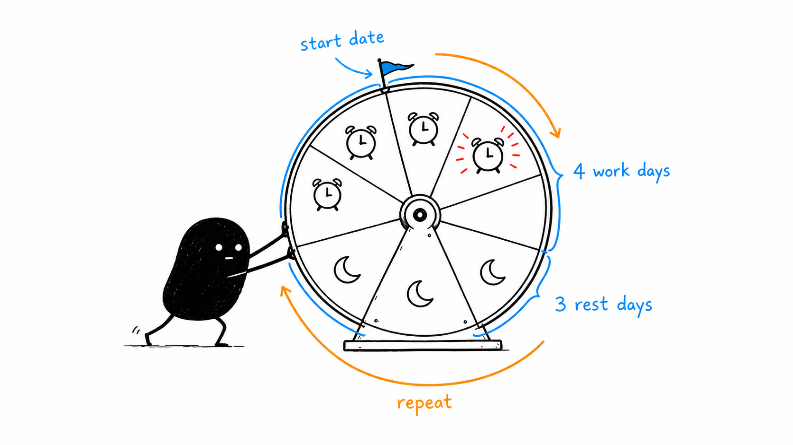
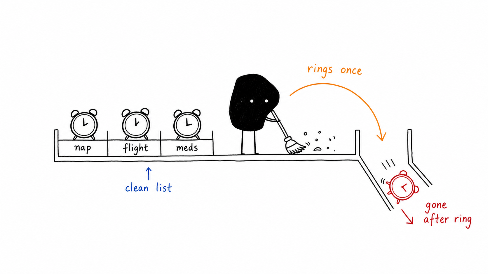
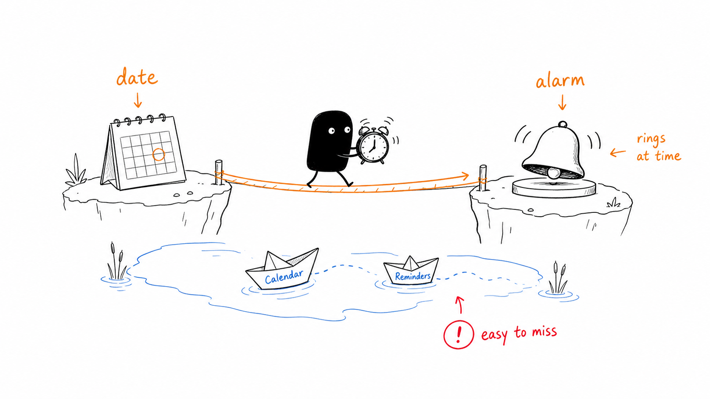
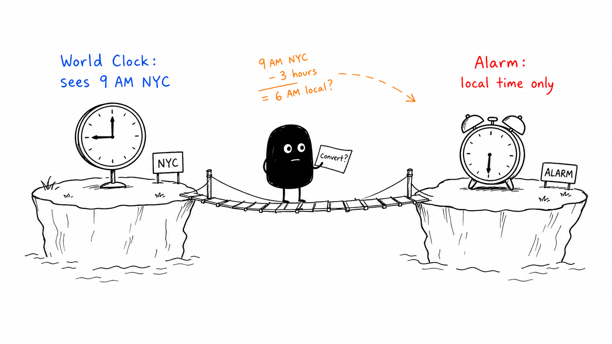
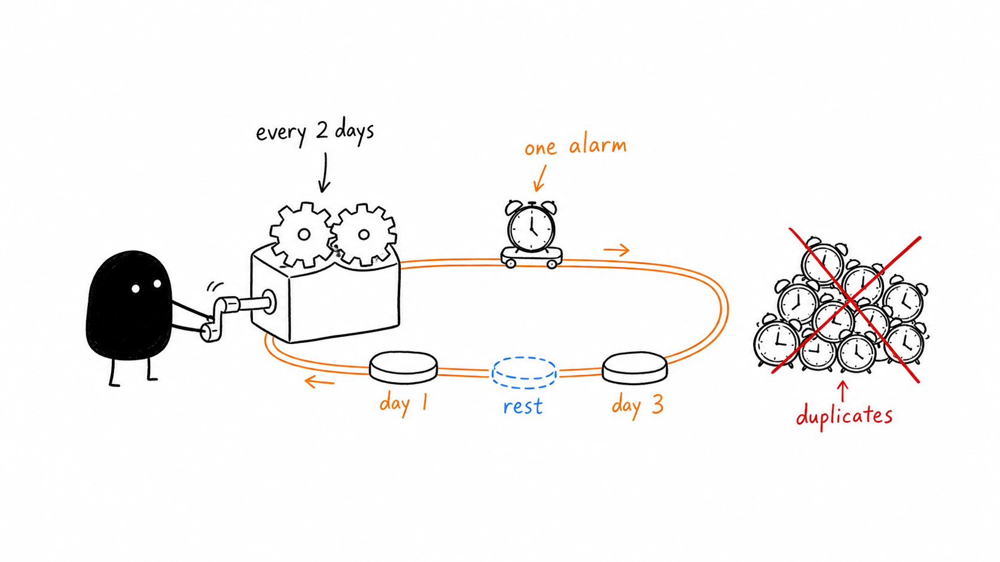
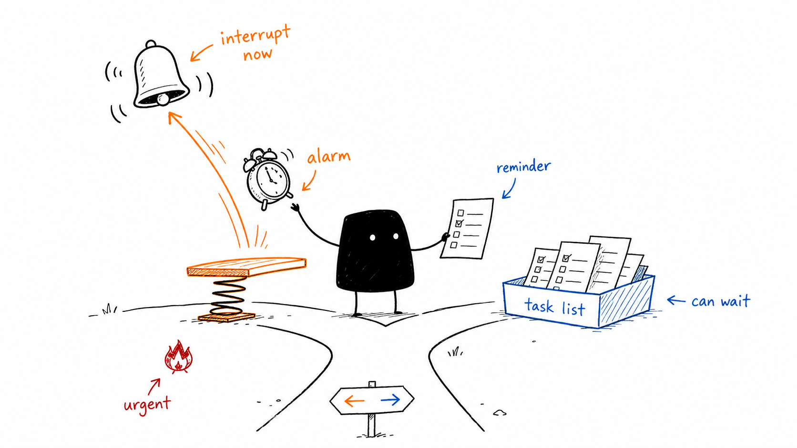

iPhone alarm guides
Set alarms for rotating shifts, future dates, and other time zones. Follow practical iPhone tutorials for custom sounds and a cleaner alarm list.

How to choose a shift work alarm app for iPhone
Build a rotating shift alarm from a start date, compare scheduling options, and handle swapped shifts.
Read the guide ›
How to automatically delete alarms on iPhone after they ring
Clear the difference between switching an alarm off and deleting it, then set up self-deleting alarms.
Read the guide ›
How to set an alarm for a specific date on iPhone
Schedule a future wake-up, exam, or ticket release, with Calendar and Reminders alternatives explained.
Read the guide ›
How to set an alarm for another time zone on iPhone
Choose the target city, compare native workarounds, and check travel dates and daylight saving changes.
Read the guide ›
How to set an alarm every other day on iPhone
Use a one-on/one-off rotation and understand why Monday/Wednesday/Friday does not mean every two days.
Read the guide ›
iPhone alarm vs reminder: which should you use?
Choose between ringing alarms, task notifications, and Calendar events for the moments in your day.
Read the guide ›How to set a custom alarm sound on iPhone without GarageBand
Use a music-library song in Clock or import your own audio file into Alarm One, with version requirements.
Read the guide ›How to delete all alarms on iPhone with Siri or Shortcuts
Reset a cluttered Clock list or select a batch, then keep future temporary alarms tidy.
Read the guide ›